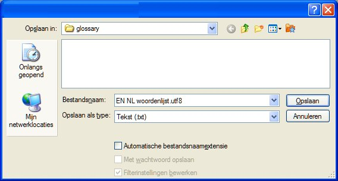
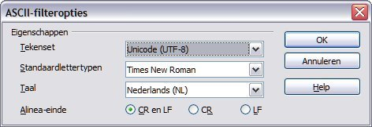

Woordenlijsten
Woordenlijsten zijn bestanden die handmatig gemaakt en bijgewerkt worden voor gebruik in OmegaT.
Als een OmegaTproject één of meer woordenlijsten bevat, worden termen uit de woordenlijst die ook worden gevonden in het actieve segment automatisch weergegeven in het venster Woordenlijst.
Gebruik
Plaats een bestaande woordenlijst eenvoudigweg in de map /glossary na het maken van het project, om die te gebruiken. OmegaT detecteert automatisch woordenlijstbestanden in deze map als het project wordt geopend. Termen in het actieve segment die OmegaT vindt in het/de woordenlijstbestand(en) worden weergegeven in het venster Woordenlijst.

Het woord voor het =-teken is de bronterm en de vertaling is (of zijn) de woorden na =. Het woordenlijst-item kan een opmerking toegevoegd hebben (zie "bedrijvend werkwoord" voor het tweede item). De functie woordenlijst vindt alleen exacte overeenkomsten met het woordenlijst-item (bijv. vindt geen afgeleide vormen etc.). Nieuwe termen kunnen handmatig aan de woordenlijstbestanden worden toegevoegd tijdens het vertalen (bijvoorbeeld in een tekstbewerkingsprogramma), maar nieuw toegevoegde termen worden niet herkend totdat het project opnieuw wordt geladen.
Bestandsformaat
Woordenlijstbestanden zijn eenvoudige platte tekst-bestanden die drie-kolommen, tabgescheiden lijsten bevatten met de bron- en doeltermen in respectievelijk de eerste en tweede kolom. De derde kolom kan worden gebruikt voor aanvullende informatie. Woordenlijstbestanden kunnen of in de standaard systeemcodering (en aangegeven door de extensie .tab) zijn of in UTF-8 (de extensie .utf8). De codering Unicode(UTF8) wordt om voor de hand liggende redenen aanbevolen.
Hoe zijn woordenlijsten te maken
Deze methode is ook geschikt voor "dwazen", mits op een redelijk behoedzame manier gevolgd. U heeft er OpenOffice.org Writer voor nodig, dus - als u dat al niet heeft gedaan - download en installeer OpenOffice.org. Start OpenOffice.org en open een nieuw tekstdocument of start "OpenOffice.org Writer".
Voer uw termen voor de woordenlijst als volgt in het lege document in: een term in de brontaal, tab, de term in de doeltaal, tab, een opmerking of uitleg voor het item en dan Return. Tab is de tabulator-toets aan de linkerzijde van het toetsenbord. Indien u geen opmerkingen wilt toevoegen, kunt u de tweede tab weglaten. Een "term" kan één enkel woord zijn of een hele frase. Op de tweede regel voert u de tweede term en diens vertaling op dezelfde manier in. Dan het derde paar termen op de derde regel, enzovoort.
Als u gereed bent met het invoeren van de termen, zult u twee "kolommen" met termen hebben, termen in de brontaal links en hun termen in de doeltaal aan recht en mogelijk een derde kolom, die uw opmerkingen en uitleg bevat. De tekens tab (→ in het voorbeeld hieronder) en Enter (¶ ) kunnen zichtbaar worden gemaakt door te klikken op het pictogram ¶ op de werkbalk Standaard van Writer. Hier zijn een aantal regels van een Engels -Duitse woordenlijst)
word →Wort→das (-/e/s, Wörter/-e)¶
small house→Häuschen→das,
(pl Häuschen)¶
dog →Hund→m, f Hündin ¶
horse→Pferd→n, m Hengst f Stute n Fohlen¶
Gebruik NIET de functie "kolommen" van OpenOffice.org om kolommen te maken: scheid eenvoudigweg elke term van bron- en doeltaal door één enkele tab.
Selecteer Bestand > Opslaan als als u gereed bent met de items. Voer, in het vak "Bestandsnaam", een naam in voor uw woordenlist bestand, gevolgd door de extensie ".utf8" (bijv. "MynWoordenlijst.utf8"). Voor "Opslaan als type" selecteert u "Text gecodeerd (.txt.)". Verwijder het vinkje vóór "Automatische bestandsnaamextensie" en activeer "Filterinstellingen bewerken":

Bevestig met OK. Er verschijnt een dialoogvenster met twee opties: "Ja" en "Nee". Selecteer "Ja" om op te slaan in de indeling: gecodeerd tekstbestand.
Selecteer "Unicode (UTF-8)" als de tekenset in het dialoogvenster ASCII-filteropties (zie hieronder):

Bevestig met OK.
Kopieer of verplaats dit bestand naar de map \glossary van het project, na het maken van een OmegaT project. Als het project al is geopend, herlaadt het dan na het kopiëren van het woordenlijstbestand. U kunt wijzigingen maken in een woordenlijstbestand terwijl het wordt gebruikt in een project, maar zij zullen niet zichtbaar zijn vóórdat het project opnieuw is geladen.
Wanneer een segment, dat een brontekstterm bevat, wordt geopend, zal het venster Woordenlijst de items weergeven voor die termen in het bronsegment die worden gevonden in de woordenlijst (of woordenlijsten - u kut er meer dan één beschikbaar hebben).Gebruik van Trados Multiterm
Woordenlijsten die zijn gemaakt met behulp van Trados Multiterm's tekstexportfunctie kunnen bijvoorbeeld zonder verdere aanpassingen worden gebruikt als OmegaT-woordenlijsten, vooropgesteld dat zij de bestandsextensie .tab hebben gekregen en de bron- en doelterm-velden respectievelijk de eerste twee velden zijn. Indien u exporteert met behulp van de systeemoptie "Tabgescheiden exporteren", moet u de eerste 5 kolommen verwijderen (Seq. Nr, Datum gemaakt etc) vóór de twee items die van belang zijn.
Algemene problemen met woordenlijsten
- Probleem: Er worden geen woordenlijstitems weergegeven.
- Mogelijke oorzaken:
- geen woordenlijstbestand in de map "glossary"
- woordenlijstbestand is leeg
- de items worden niet gescheiden door een TAB-teken
- het woordenlijstbestand heeft niet de juiste extensie (.tab of .utf8)
- Er bestaat geen EXACTE overeenkomst tussen het item in de woordenlijst en de brontekst in uw document - bijvoorbeeld als het item meervoud is
- het woordenlijstbestand heeft niet de juiste codering
- er staan in het actieve segment geen termen die overeenkomen met enige term in de woordenlijst
- één of meer van bovenstaande problemen kan zijn gerepareerd, maar het project werd nog niet herladen.
- Probleem: In het venster Woordenlijst worden sommige tekens niet juist weergegeven (maar dezelfde tekens worden wel goed weergegeven in het venster Bewerken).
- Mogelijke oorzaken:
- de extensie en de codering van het bestand komen niet overeen.